Instalační pokyny pro Windows
Tyto pokyny jsou výhradně pro Windows. Instalaci pro uživatele Mac OS X najdete ZDE.
Na kurzu budeme potřebovat Javu (JDK)
a programátorský textový editor IntelliJ IDEA (Community Edition).
Dobrá zpráva je, že obojí je zdarma.
Kompletní přednastavený archív si můžete stáhnout z tohoto
ODKAZU
a jednoduše ho rozbalte do složky C:\Java-Training.
Je nezbytně nutné rozbalit vše právě do C:\Java-Training.
V jiné složce (například na ploše nebo ve vaší složce Dokumenty) aplikace nebudou fungovat.
Nejjednodušší je následovat tento postup:
-
Klikněte na odkaz
Java-Training.7z
a zvolte
Stáhnout...do složky Stažené soubory
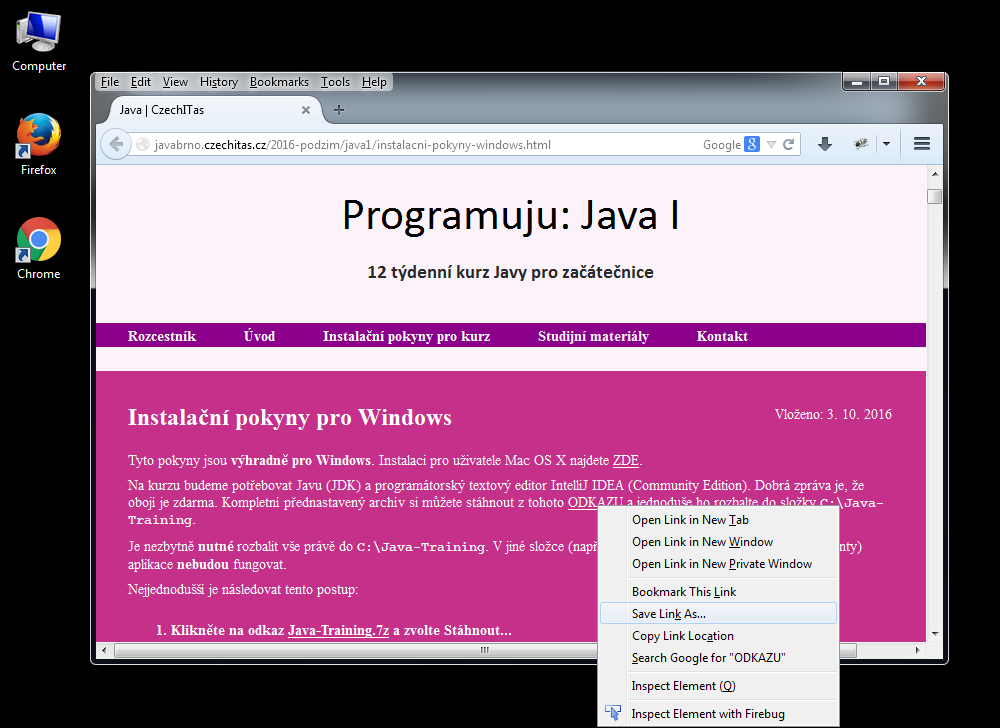
-
Pokud se vám podaří archív stáhnout, pokračujte k bodu Instalace.
-
Pokud by výše uvedený odkaz nefungoval, alternativní Google Drive už neexistuje.
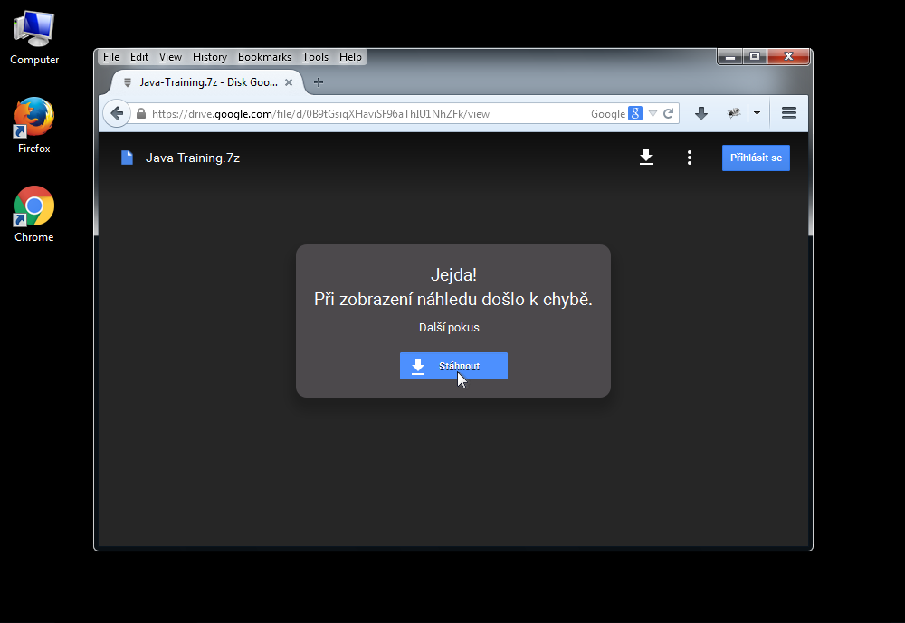
-
Nenechte se vyvést z míry případnými varováními
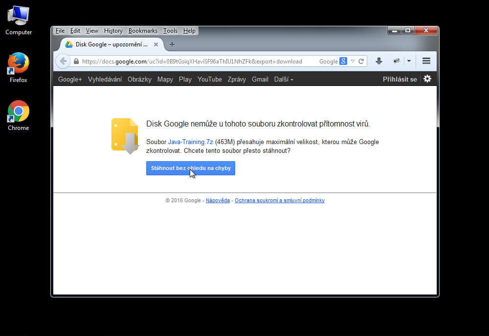
-
Klikněte na tlačítko "Stáhnout bez ohledu na chyby" pravým tlačítkem a zvolte Uložit odkaz jako... (Save link as...)
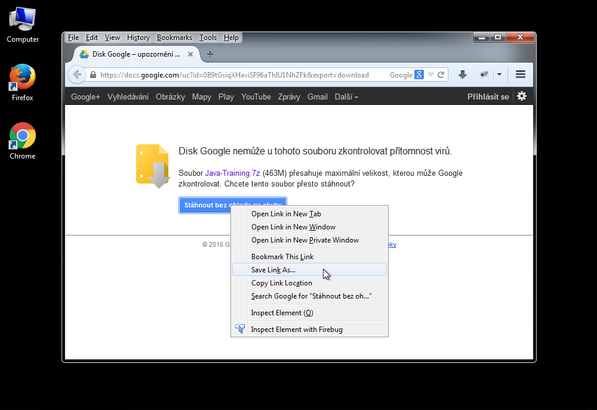
-
Uložte soubor do složky Stažené soubory (Downloads).
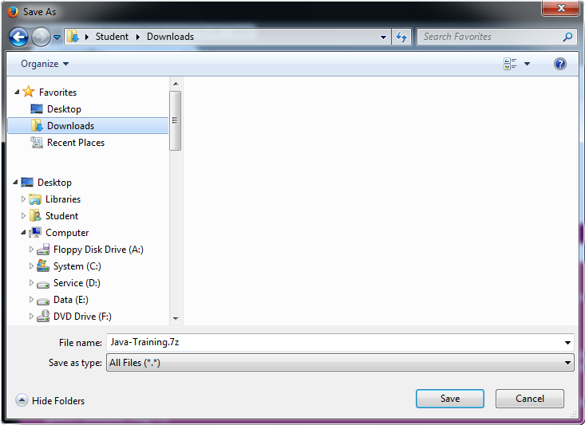
Instalace
-
Klikněte pravým tlačítkem na soubor Java-Training.7z ve složce Stažené soubory (Downloads).
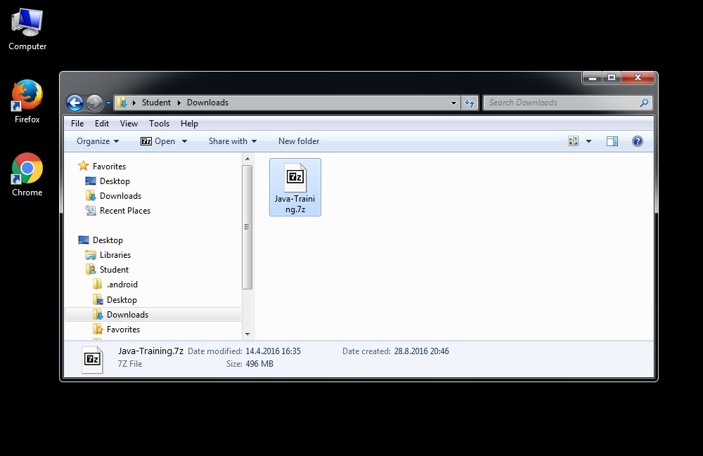
-
Pokud je možné v kontextové nabídce zvolit
7-Zip -> Otevřít, vyberte to a pokračujte až k bodu rozbalování.

-
Pokud tato volba není k dispozici, zkuste ještě na archív dvakrát kliknout.
Pokud se objeví následující okno, pokračujte také k bodu rozbalování.
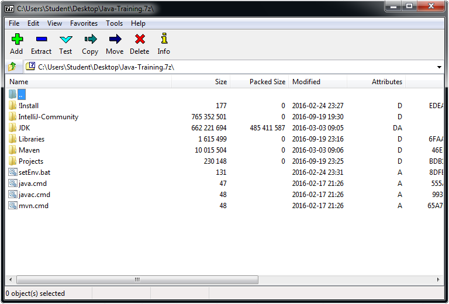
-
Pokud se naopak objevila chybová hláška Windows, že soubor nelze otevřít, nemáte nainstalovaný archivační software 7-Zip.
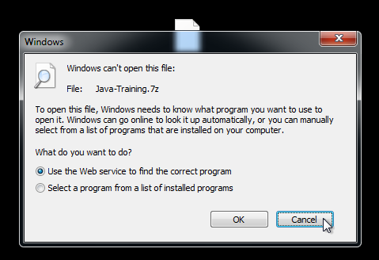
-
Musíte si jej stáhnout z adresy
www.7-zip.org
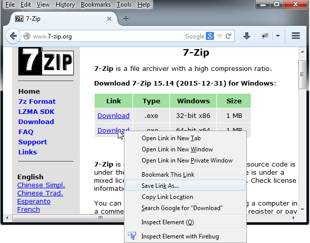
-
I tento soubor (7z1514-x64.exe) si stáhněte do složky Stažené soubory.
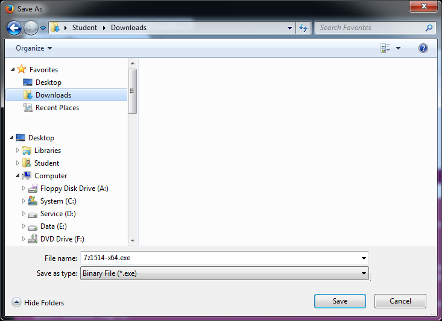
-
Dvojklikněte na 7z1514-x64.exe a spusťte instalaci.
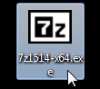
-
Potvrďte bezpečnostní varování.
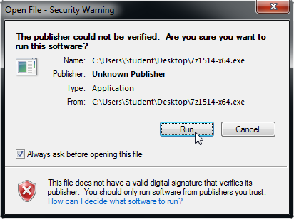
-
Potvrďte cílovou instalační složku.
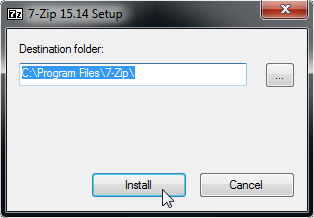
-
Nyní když kliknete pravým tlačítkem myši na archív Java-Training.7z ve složce Stažené soubory (Downloads),
můžete zvolit 7-Zip -> Otevřít.
-
Uvidíte okno jako v bodu 7.
-
Zvolte v záhlaví okna volbu Rozbalit (Extract)
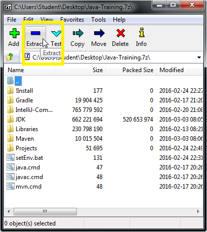
-
Aplikace 7-Zip se vás zeptá, kam chcete archív rozbalit. Zadejte
C:\Java-Training. Pozor na malá a velká písmena a pomlčku.
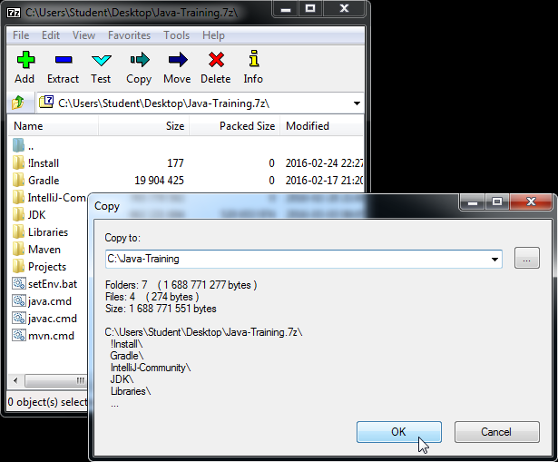
-
Po dokončení rozbalování otevřete ve správci souborů (ikona Tento počítač) složku
C:\Java-Training\IntelliJ-Community.
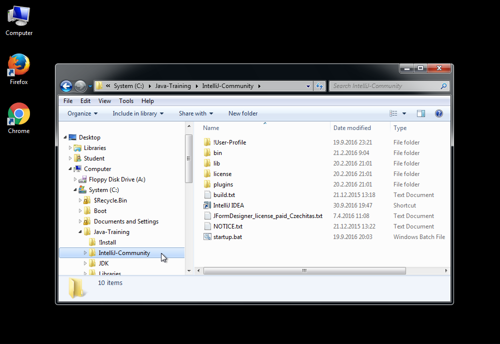
-
Zvolte soubor s ikonkou IntelliJ IDEA.
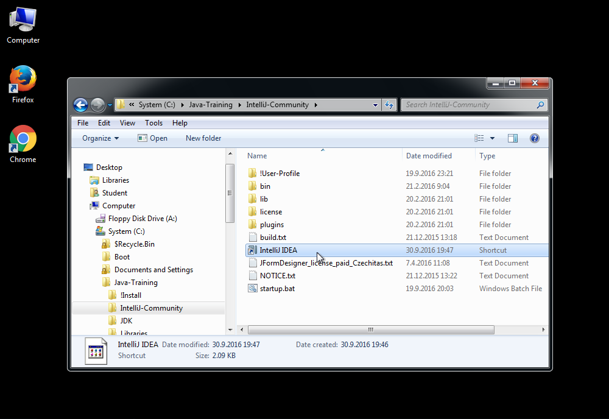
-
Přetáhněte ho na plochu.
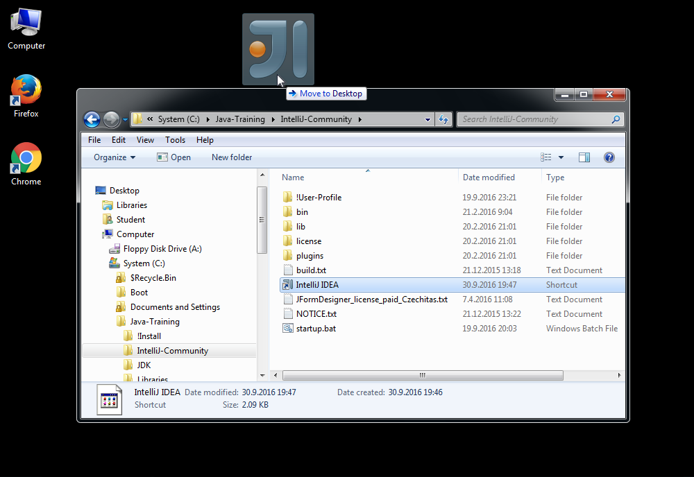
-
Tímto zástupcem na ploše můžete spustit editor IntelliJ IDEA.
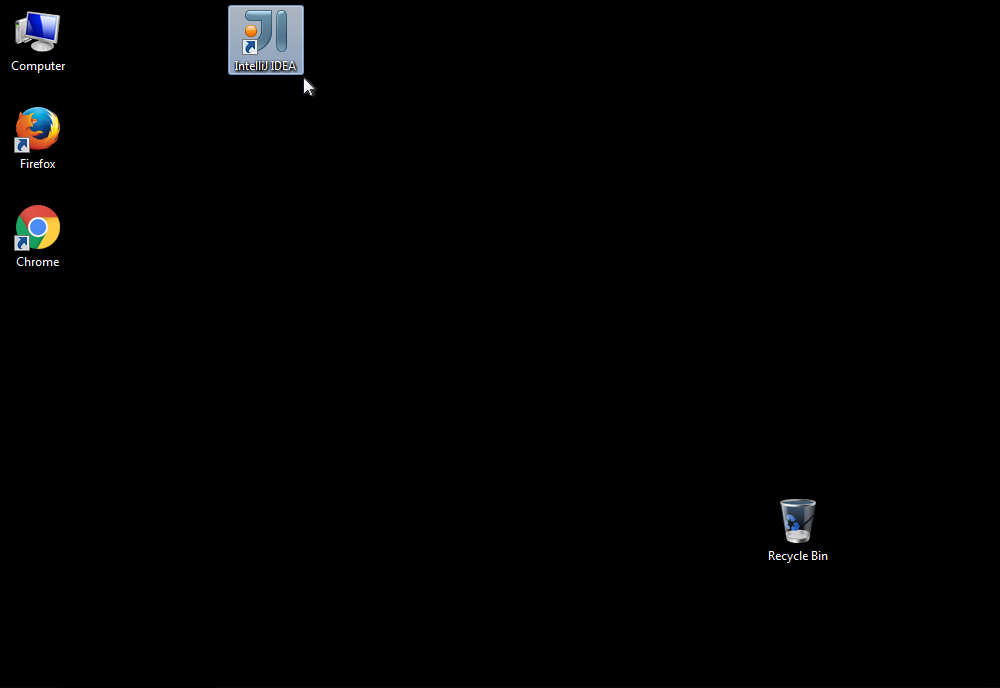
- Pokud jste vše udělali správně, můžete zkusit otevřít ukázkovou aplikaci a spustit ji.
Ukázková aplikace
-
Spusťte IntelliJ IDEA pomocí zástupce na ploše.
-
Zvolte Otevřít (Open)
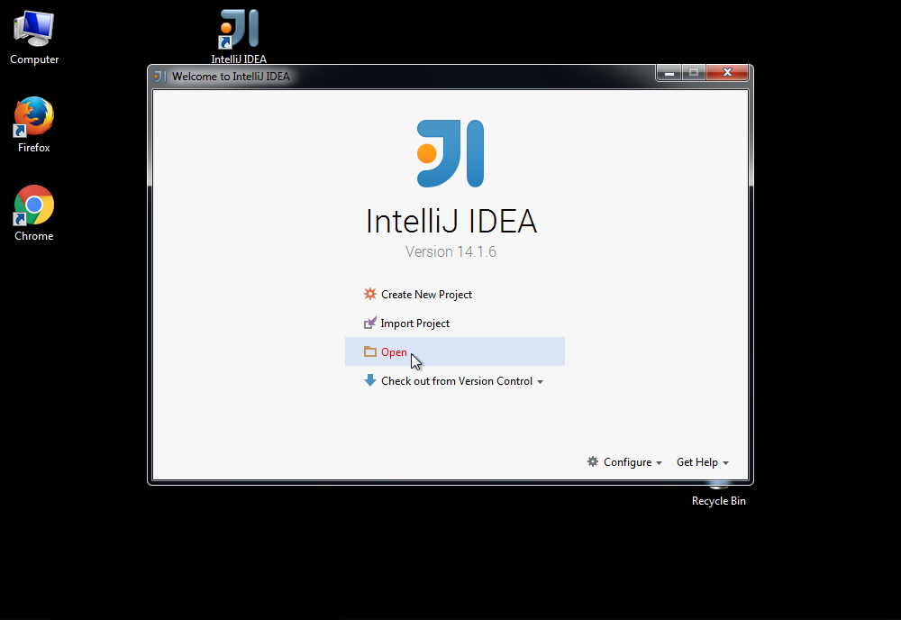
-
Ukázkovou aplikaci najdete v
C:\Java-Training\Projects\PrvniProjekt.
Pozor! Nikdy nerozbalujte složky dvojitým kliknutím. Jednotlivé složky je nutné rozklikávat pomocí trojúhelníkové šipky před jejich jmény. Až najdete složkuPrvniProjekt, potvrďte tlačítkem OK.
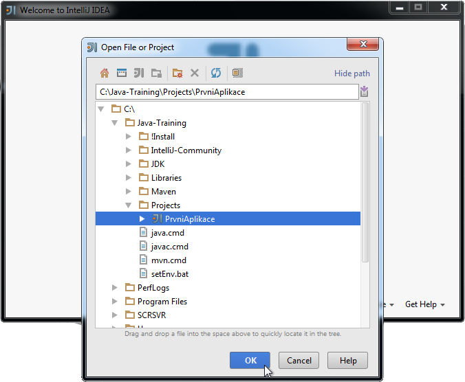
-
Zvolte v pravo nahoře zelenou šipku Run
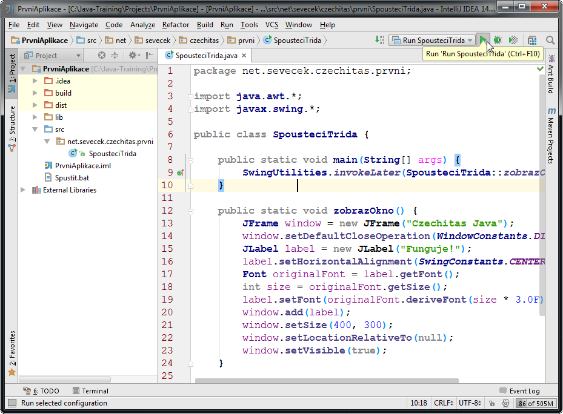
-
Měli byste vidět tuto malinkou aplikaci
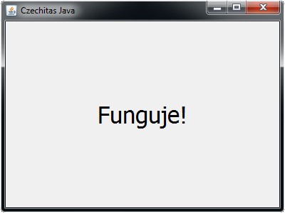
Pokud se někde něco nepovede, nezoufejte. Na kurzu vám pomůžeme.